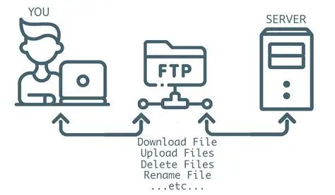

FTP stands for File Transfer Protocol. It is one of the protocols that operates on top of TCP/IP and is used on the Internet to allow files to be easily copied to and from remote sites. FTP makes it possible to transfer files between two computers over a network regardless of the operating systems they are running.

FTP works on a client-server model. The computer requesting the file is the FTP client and the computer hosting the files is the FTP server. The process works as follows:
FTP is commonly used for the following purposes:
FTP is one of several protocols that form part of the TCP/IP suite. While HTTP is used to transfer web pages between servers and browsers, FTP is specifically designed for transferring files. Both protocols are part of the broader set of tools that make the Internet and the World Wide Web function. FTP addresses on the Internet begin with ftp:// instead of http://.